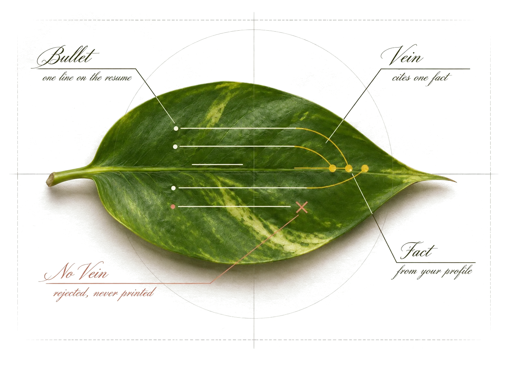
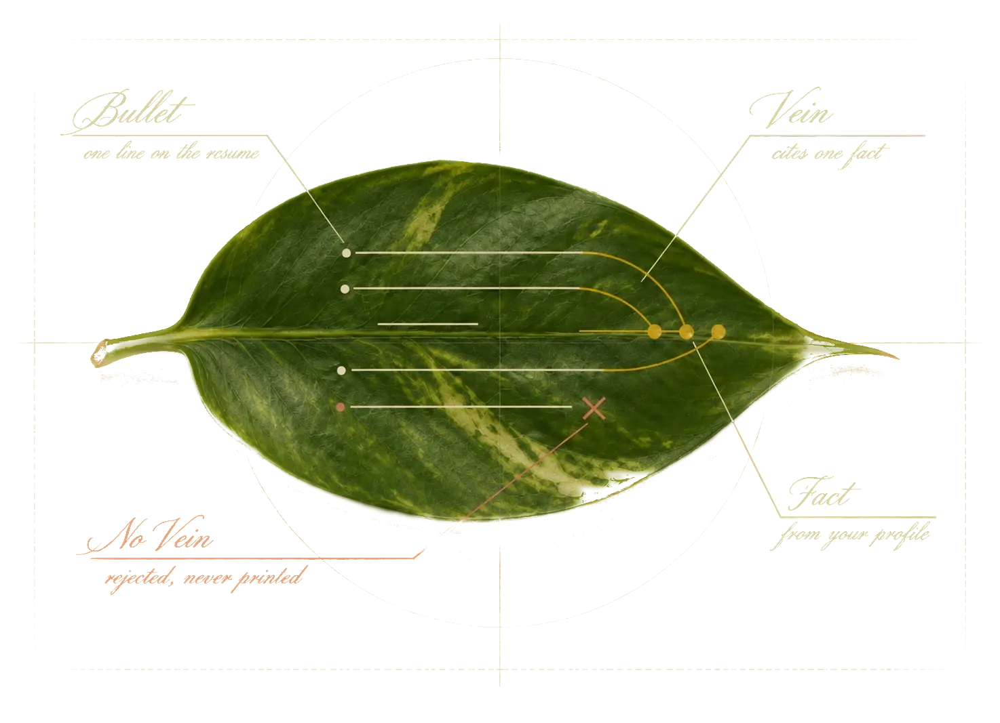
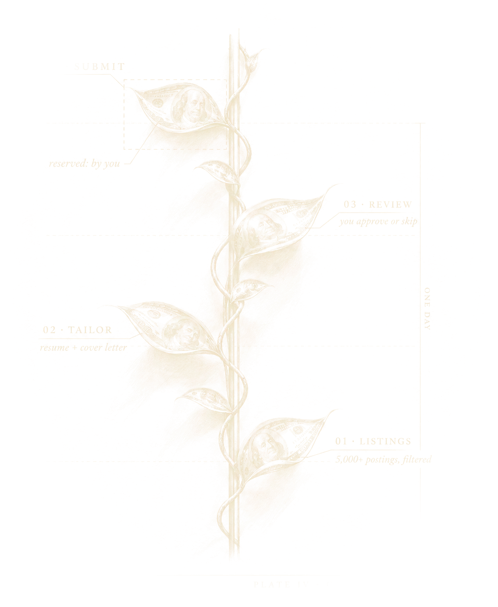
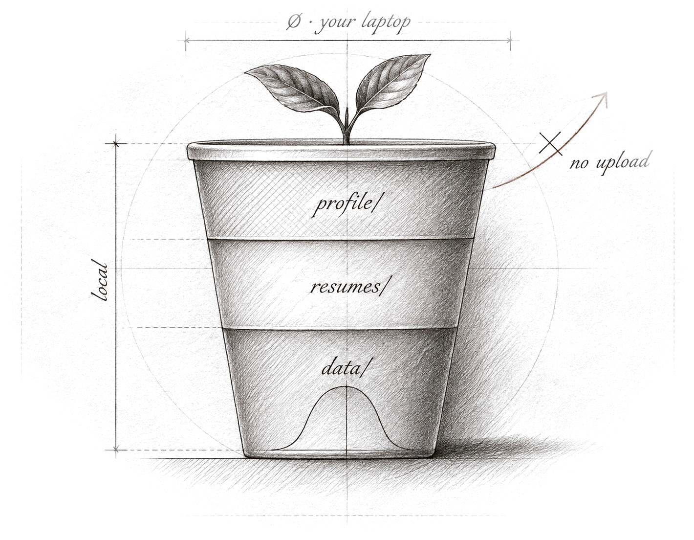

Apply with AI.
Submit yourself.
employMint is a free, open-source AI tool for internship applications. It finds roles that fit you, writes a truthful one-page resume for each, and fills in the application. Then it stops, so the last click is always yours.
Built for Claude Code. Also works with Codex and other AI assistants.
File EM-02 · Field recording
See it work
A 48-second film with narration. In a secret lab lit by red darkroom light, a vine grows overnight in a sealed chamber, prints develop and hang to dry, and a laptop fills in a form. The vine reaches a glowing button and stops short. Narration: it read five thousand postings; every leaf is written from what you gave it, nothing invented; it fills in the form; then it stops, because the last step is reserved for you.
File EM-03 · Leaf detail
It never invents a fact.
Every line on a resume cites a fact you gave it. A line it can't trace back, like a number you never mentioned, is cut before the PDF is made.
- Bullet
- one line on the resume
- Vein
- the fact it cites
- No vein
- rejected by the checker



File EM-04 · Growth pattern
How it works
- Install once. Download the folder and run
./install.sh. - Say "set me up". Hand your AI assistant your resume. It asks a few questions and turns your experience into facts it's allowed to use.
- Run today's batch. It finds the best new roles, tailors a resume for each, and lines them up on a review page.
- Approve, open, submit. It fills the form. The last node is yours.
File EM-05 · Pot detail
Nothing leaves your laptop.
Your resume, your answers and every application live in one folder on your computer. No account, no server, no upload.
- profile/
- your facts and answers
- resumes/
- one folder per job
- data/
- job list, logins, logs


File EM-06 · The last cut
You press Submit.
employMint fills the form, marks anything you need to answer, and stops. There's no code that clicks Submit. Demographic, salary and consent questions are always left for you.
- Greenhouse, Ashby
- filled automatically
- Workday
- walks the steps, stops at Review
- Lever
- opens in your Chrome with an answer sheet
File EM-07 · Requisition
Get employMint
| Item | Specification | Note |
|---|---|---|
| Computer | macOS or Linux | Windows through WSL |
| Python | 3.9 or newer | python.org |
| Browser | Google Chrome | not Chromium |
| Assistant | Claude Code | Codex and others also work |
| Licence | MIT | free, open source |
or clone it
git clone https://github.com/kunalagarrwal/employMint.git
- Open the folder in a terminal
Unzip it first if you downloaded the ZIP.
- Run
./install.shOne time. Safe to run again.
- Open it in your AI assistant
For Claude Code, run
claudein the folder, then say "Set me up".